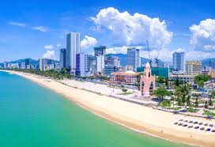

🏖️ Bãi biển Nha Trang
Bãi biển dài 6km với cát trắng mịn và nước biển trong xanh tuyệt đẹp.
Thiên đường biển miền Trung Việt Nam
Nha Trang - thành phố biển xinh đẹp với bãi cát trắng mịn, nước biển xanh trong và hải sản tươi ngon.
Khám phá ngayNha Trang là thành phố ven biển thuộc tỉnh Khánh Hòa, nổi tiếng với bãi biển dài 6km tuyệt đẹp và khí hậu nhiệt đới ôn hòa quanh năm.
Nha Trang không chỉ là điểm đến du lịch, mà còn là nơi lưu giữ những kỷ niệm đẹp của mỗi người.
"Biển Nha Trang xanh như ngọc, cát trắng mịn như lụa - một thiên đường nhiệt đới giữa lòng Việt Nam."
Bãi biển dài 6km với cát trắng mịn và nước biển trong xanh tuyệt đẹp.
Khu vui chơi giải trí hàng đầu Việt Nam nằm trên đảo Hòn Tre.
Thưởng thức hải sản tươi sống với đa dạng món ăn đặc sản biển.
